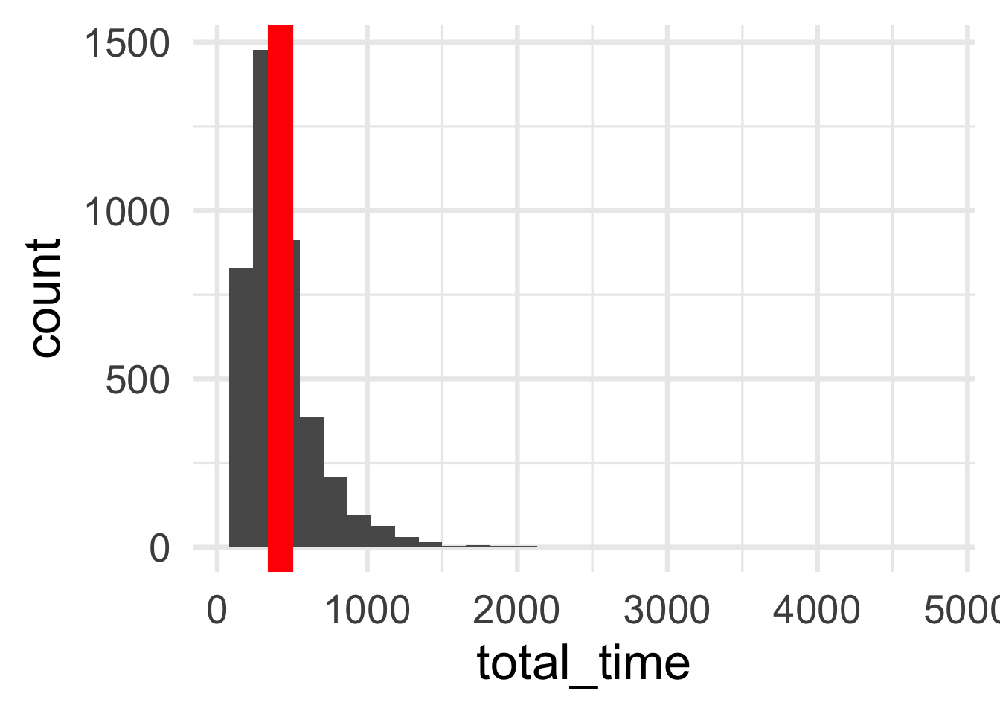
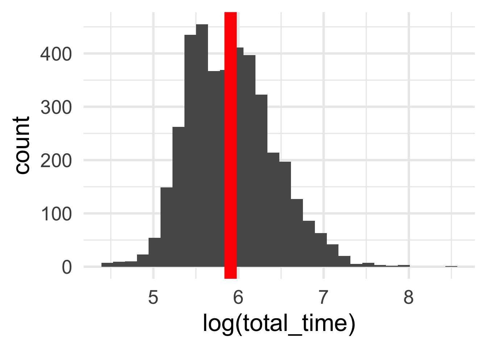
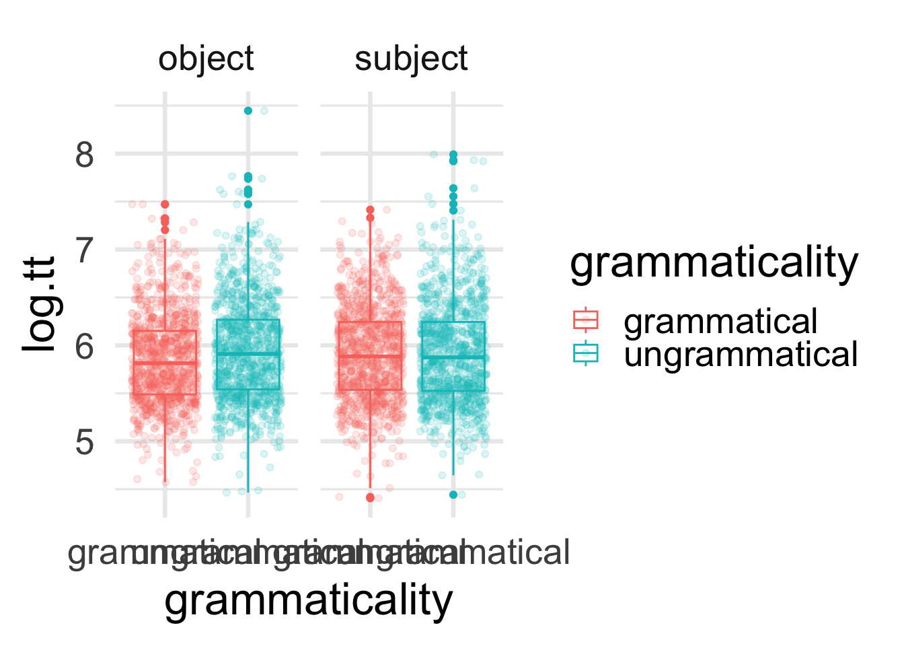
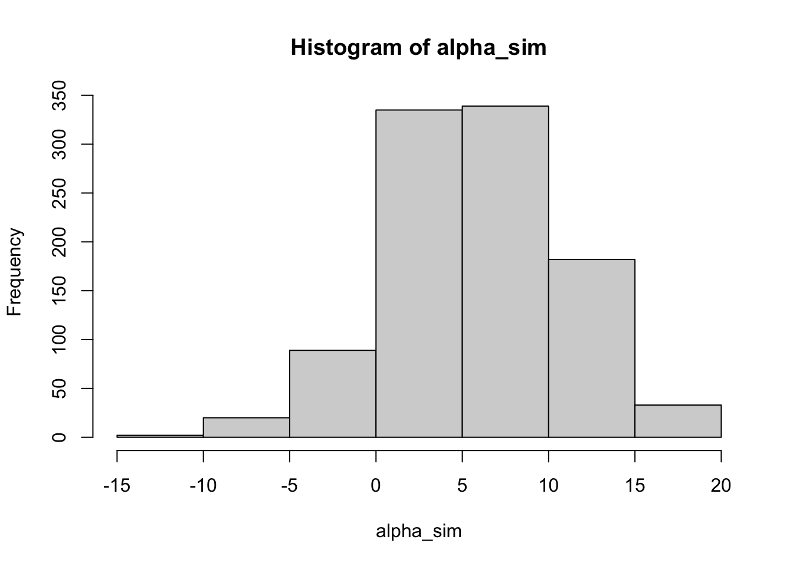
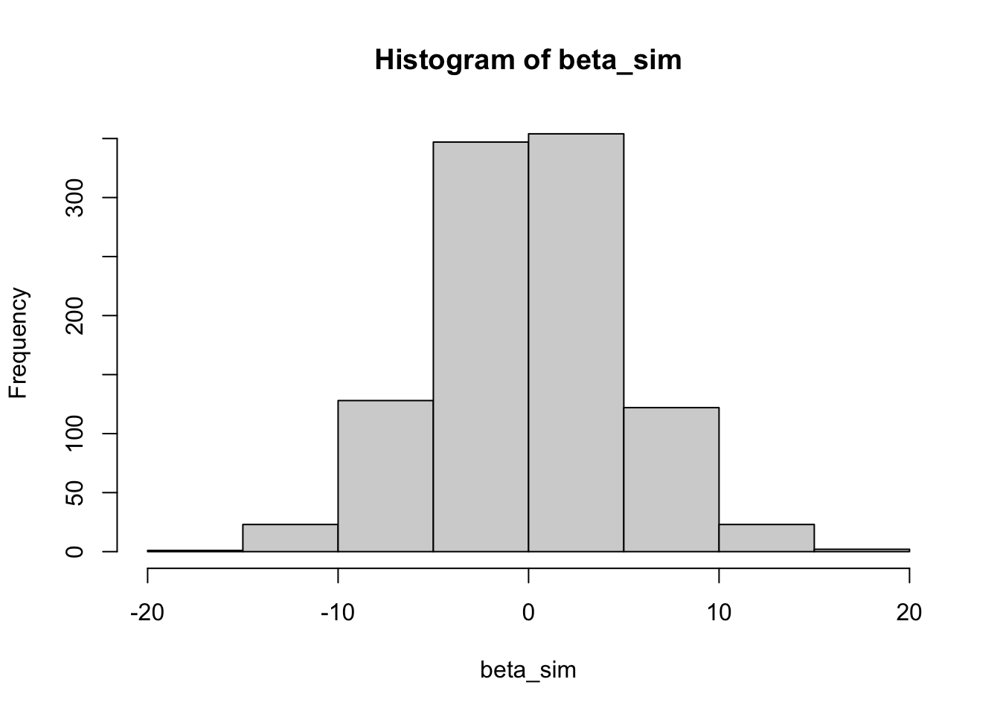
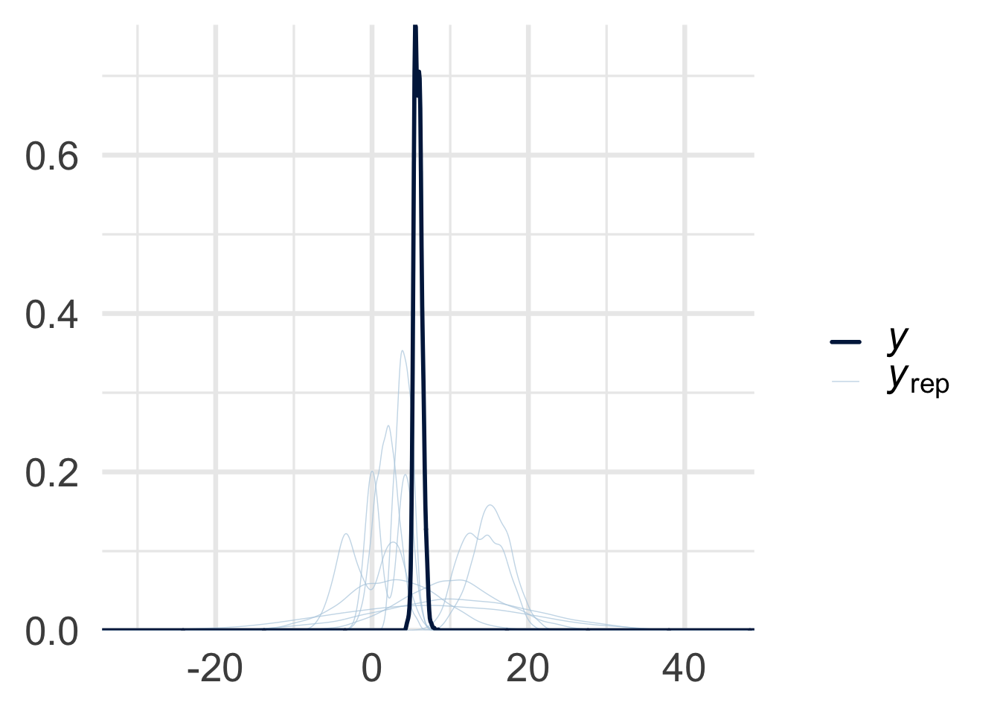
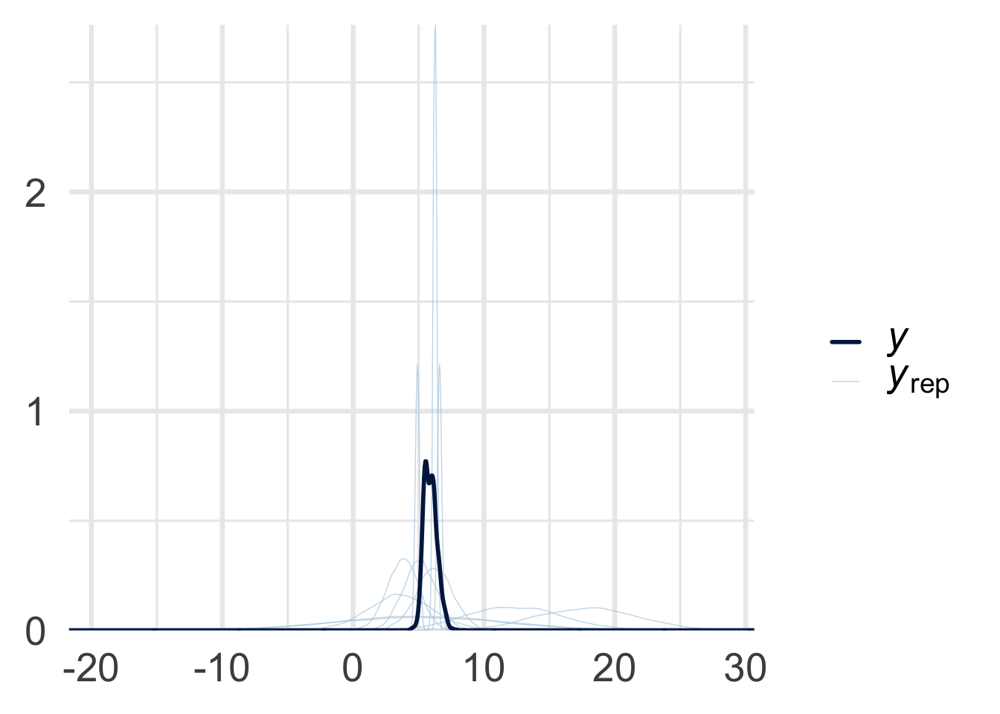
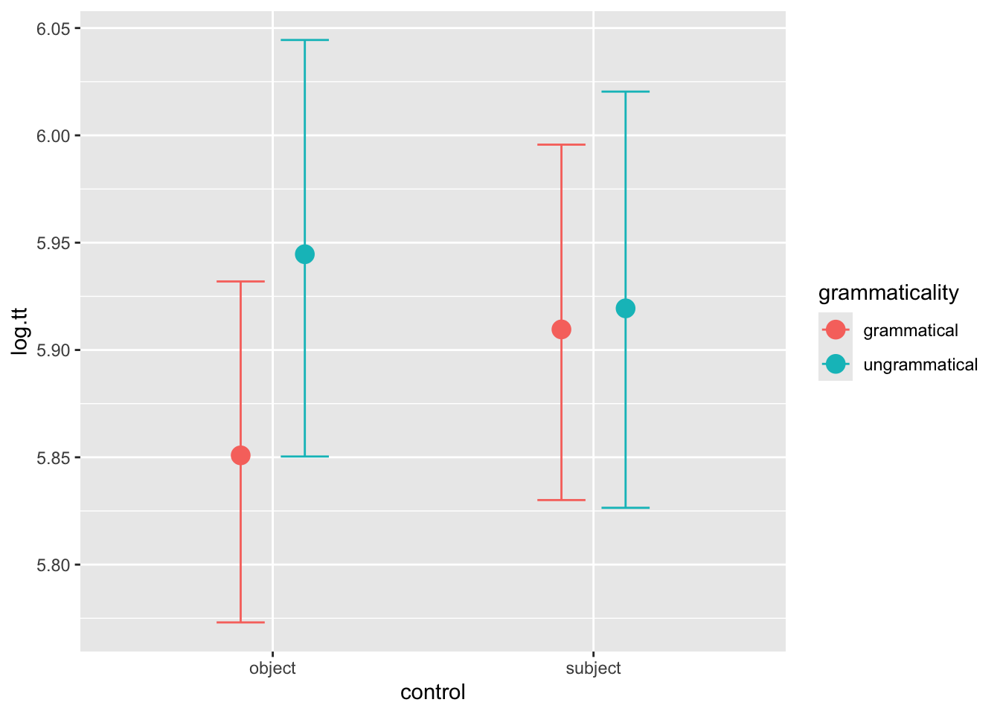
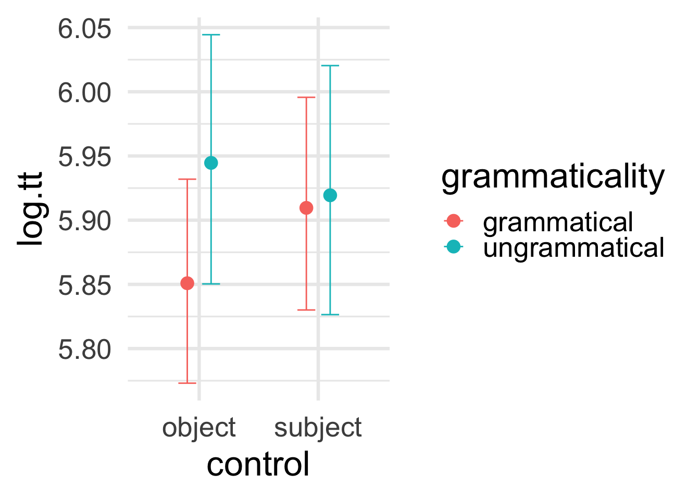

Code
library(dplyr)
library(brms)
library(ggplot2)
options(mc.cores = parallel::detectCores())
relative_path <- 'experiments-IdDF/'
relative_path <- './'
df_exp <- readr::read_csv(paste0(relative_path, 'data/Experiment_6_eye_tracking/df_exp.csv'))From de Dios Flores (2020) Processing long-distance dependencies; An experimental investigation of grammatical illusions in English and Spanish, Chapter 6
CONTROL (subject vs. object) x GRAMMATICALITY (grammatical vs. ungrammatical)
Disclaimer 1: This study is properly motivated in the context of other studies and measurements from de Dios Flores (2020) that we’ll be ignoring here. I chose this one because it has a simple(r) structure.
Disclaimer 2: Eye-tracking is hard. There are a lot of measurements. We’ll be looking at total time only today, at the region corresponding to the adjective. Again, not because there’s something special happening with it but because it allows us to move forward faster.
library(dplyr)
library(brms)
library(ggplot2)
options(mc.cores = parallel::detectCores())
relative_path <- 'experiments-IdDF/'
relative_path <- './'
df_exp <- readr::read_csv(paste0(relative_path, 'data/Experiment_6_eye_tracking/df_exp.csv'))First look at the data:
head(df_exp) %>%
knitr::kable()| participant | first_pass | go_past | total_time | reg_out | reg_out_full | region | presentation_order | block_order | list | item | condition | grammaticality | control | infinitive | control_verb | adjgender | rating | NP1_gender | NP2_gender | NP1_NP2_gender | control_verb_recoded | control_preferences | log.total_time | log.go_past | log.first_pass |
|---|---|---|---|---|---|---|---|---|---|---|---|---|---|---|---|---|---|---|---|---|---|---|---|---|---|
| 39 | 264 | 264 | 442 | 0 | 0 | 3 | 47 | 1 | 2 | 55 | D | ungrammatical | object | estar | aconsej | fem | 12 | fem | masc | fem_masc | a | 9450549451 | 6.091310 | 5.575949 | 5.575949 |
| 40 | 206 | 206 | 206 | 0 | 0 | 1 | 154 | 3 | 3 | 25 | D | ungrammatical | object | ser | aconsej | fem | 12 | fem | masc | fem_masc | a | 9450549451 | 5.327876 | 5.327876 | 5.327876 |
| 33 | 154 | 771 | 606 | 1 | 1 | 2 | 83 | 2 | 4 | 25 | C | grammatical | object | ser | aconsej | fem | 12 | masc | fem | masc_fem | a | 9450549451 | 6.406880 | 6.647688 | 5.036953 |
| 36 | 221 | 221 | 221 | 0 | 0 | 3 | 74 | 2 | 3 | 37 | C | grammatical | object | estar | aconsej | masc | 12 | fem | masc | fem_masc | a | 9450549451 | 5.398163 | 5.398163 | 5.398163 |
| 19 | 750 | 750 | 750 | 0 | 0 | 1 | 9 | 1 | 2 | 67 | C | grammatical | object | ser | aconsej | masc | 22 | fem | masc | fem_masc | a | 9450549451 | 6.620073 | 6.620073 | 6.620073 |
| 9 | 247 | 247 | 247 | 0 | 0 | 1 | 102 | 2 | 1 | 79 | D | ungrammatical | object | estar | aconsej | fem | 13333333333 | fem | masc | fem_masc | a | 9450549451 | 5.509388 | 5.509388 | 5.509388 |
Focusing on only the variables and regions of interest:
df <- df_exp %>%
filter(region == 6) %>%
select(participant, item, presentation_order,
total_time, control, grammaticality)
head(df) %>%
knitr::kable()| participant | item | presentation_order | total_time | control | grammaticality |
|---|---|---|---|---|---|
| 32 | 13 | 204 | 1014 | object | ungrammatical |
| 29 | 1 | 105 | 154 | object | ungrammatical |
| 33 | 25 | 83 | 401 | object | grammatical |
| 36 | 25 | 36 | 413 | object | ungrammatical |
| 23 | 67 | 190 | 372 | object | grammatical |
| 14 | 91 | 81 | 551 | object | ungrammatical |
Other things to check for:
summary(df) %>%
knitr::kable()| participant | item | presentation_order | total_time | control | grammaticality | |
|---|---|---|---|---|---|---|
| Min. : 1.00 | Min. : 1.00 | Min. : 1 | Min. : 82.0 | Length:4041 | Length:4041 | |
| 1st Qu.:12.00 | 1st Qu.:25.00 | 1st Qu.: 60 | 1st Qu.: 250.0 | Class :character | Class :character | |
| Median :24.00 | Median :48.00 | Median :119 | Median : 355.0 | Mode :character | Mode :character | |
| Mean :23.32 | Mean :48.51 | Mean :120 | Mean : 421.7 | NA | NA | |
| 3rd Qu.:35.00 | 3rd Qu.:72.00 | 3rd Qu.:180 | 3rd Qu.: 506.0 | NA | NA | |
| Max. :45.00 | Max. :96.00 | Max. :240 | Max. :4660.0 | NA | NA |
sum(is.na(df))[1] 0unique(df$grammaticality)[1] "ungrammatical" "grammatical" unique(df$control)[1] "object" "subject"Things to look out for:
m_tt <- mean(df$total_time)
df %>%
ggplot(aes(x = total_time)) +
geom_histogram() +
geom_vline(xintercept = m_tt, col = 'red', size = 6) +
theme_minimal(base_size = 25)Warning: Using `size` aesthetic for lines was deprecated in ggplot2 3.4.0.
ℹ Please use `linewidth` instead.`stat_bin()` using `bins = 30`. Pick better value with `binwidth`.
m_tt <- mean(log(df$total_time))
df %>%
ggplot(aes(x = log(total_time))) +
geom_histogram() +
geom_vline(xintercept = m_tt, col = 'red', size = 6) +
theme_minimal(base_size = 25)`stat_bin()` using `bins = 30`. Pick better value with `binwidth`.
df <- df %>%
mutate(log.tt = log(total_time)) %>%
select(-total_time)
df %>%
head() %>%
knitr::kable()| participant | item | presentation_order | control | grammaticality | log.tt |
|---|---|---|---|---|---|
| 32 | 13 | 204 | object | ungrammatical | 6.921658 |
| 29 | 1 | 105 | object | ungrammatical | 5.036953 |
| 33 | 25 | 83 | object | grammatical | 5.993961 |
| 36 | 25 | 36 | object | ungrammatical | 6.023448 |
| 23 | 67 | 190 | object | grammatical | 5.918894 |
| 14 | 91 | 81 | object | ungrammatical | 6.311735 |
df %>%
ggplot(aes(x = grammaticality, y = log.tt, col = grammaticality)) +
geom_boxplot() +
geom_jitter(alpha = 0.15) +
facet_wrap(~ control) +
theme_minimal(base_size = 25)
This is a controlled laboratory experiment so we have a few expectations (since it was designed to test those expectations)
grammaticality on reading time (specify)control on reading time (specify)grammaticality and control (specify)This gives us the following model template for the most important things we want to check:
\[y_i \sim N(\mu_i, \sigma)\] \[\mu_i = \alpha + \beta_1 \text{grammaticality}_i + \beta_2 \text{control}_i + \beta_3 (\text{grammaticality}_i \times \text{control}_i)\]
We also know the following:
So it would be nice to add that to the model. We also need to specify the priors but let’s start with a simpler model first:
\[y_i \sim N(\mu_i, \sigma)\] \[\mu_i = \alpha + \beta_1 \text{grammaticality}_i\]
df %>%
group_by(grammaticality) %>%
summarize(mean = mean(log.tt),
median = median(log.tt),
min = min(log.tt),
max = max(log.tt))# A tibble: 2 × 5
grammaticality mean median min max
<chr> <dbl> <dbl> <dbl> <dbl>
1 grammatical 5.88 5.85 4.41 7.47
2 ungrammatical 5.93 5.89 4.44 8.45From this and the visualization above we know that, if there is a difference between grammatical and ungrammatical sentences, it won’t be big. Let’s go with a very conservative guess first
\[y_i \sim N(\mu_i, \sigma)\] \[\mu_i = \alpha + \beta_1 \text{grammaticality}_i\] \[\alpha \sim N(5.9, 5)\] \[\bet_1 \sim N(0, 5)\]
We can visualize these priors either analytically or by simulation. Simulation is more convenient and easier to understand.
alpha_sim <- rnorm(mean = 5.9, sd = 5, n = 1000)
beta_sim <- rnorm(mean = 0, sd = 5, n = 1000)hist(alpha_sim)
hist(beta_sim)
OK. This is super wide. Consider the consequences. Let’s fix \(\alpha = 5.9\), if \(\beta_1\) is \(10\) we get:
5.9 + 10[1] 15.9As the effect of being ungrammatical. A difference in 10 is huge. We’re also allowing the effect to go in the other direction by having -10 in there –and some more extreme values like -20.
Translated into brms syntax, our model is as follows:
univariate_model <- brm(data = df,
formula = log.tt ~ grammaticality,
family = gaussian(),
prior = c(
set_prior("normal(5.9, 5)", class = 'Intercept'),
set_prior('normal(0,5)',
class = 'b', coef = 'grammaticalityungrammatical')
),
iter = 1000,
chains = 4)Compiling Stan program...Start samplingThere are many things happening here, so let’s go step by step.
Summary of the model output:
summary(univariate_model) Family: gaussian
Links: mu = identity; sigma = identity
Formula: log.tt ~ grammaticality
Data: df (Number of observations: 4041)
Draws: 4 chains, each with iter = 1000; warmup = 500; thin = 1;
total post-warmup draws = 2000
Regression Coefficients:
Estimate Est.Error l-95% CI u-95% CI Rhat Bulk_ESS
Intercept 5.88 0.01 5.86 5.91 1.00 1847
grammaticalityungrammatical 0.05 0.02 0.02 0.08 1.00 1622
Tail_ESS
Intercept 1219
grammaticalityungrammatical 1356
Further Distributional Parameters:
Estimate Est.Error l-95% CI u-95% CI Rhat Bulk_ESS Tail_ESS
sigma 0.50 0.01 0.49 0.52 1.00 1816 1398
Draws were sampled using sampling(NUTS). For each parameter, Bulk_ESS
and Tail_ESS are effective sample size measures, and Rhat is the potential
scale reduction factor on split chains (at convergence, Rhat = 1).Summary of the estimates:
fixef(univariate_model) %>%
knitr::kable()| Estimate | Est.Error | Q2.5 | Q97.5 | |
|---|---|---|---|---|
| Intercept | 5.8833180 | 0.0110696 | 5.862108 | 5.9054254 |
| grammaticalityungrammatical | 0.0479925 | 0.0160518 | 0.016196 | 0.0785996 |
Check that the priors were set correctly:
get_prior(univariate_model) %>%
knitr::kable()| prior | class | coef | group | resp | dpar | nlpar | lb | ub | source |
|---|---|---|---|---|---|---|---|---|---|
| b | default | ||||||||
| normal(0,5) | b | grammaticalityungrammatical | user | ||||||
| normal(5.9, 5) | Intercept | user | |||||||
| student_t(3, 0, 2.5) | sigma | 0 | default |
#Prior predictive check with sample_prior="only"
fitPrior <- brm(data = df,
formula = log.tt ~ grammaticality,
family = gaussian(),
prior = c(
set_prior("normal(5.9, 5)", class = 'Intercept'),
set_prior('normal(0,5)',
class = 'b', coef = 'grammaticalityungrammatical')
),
iter = 1000,
chains = 4,
sample_prior = 'only')Compiling Stan program...Start sampling#Plots the prior predictive check
pp_check(fitPrior) +
theme_minimal(base_size = 25)Using 10 posterior draws for ppc type 'dens_overlay' by default.
Let’s contrast this with the default priors from brms
univariate_model_def <- brm(data = df,
formula = log.tt ~ grammaticality
)Compiling Stan program...Start samplingsummary(univariate_model_def) Family: gaussian
Links: mu = identity; sigma = identity
Formula: log.tt ~ grammaticality
Data: df (Number of observations: 4041)
Draws: 4 chains, each with iter = 2000; warmup = 1000; thin = 1;
total post-warmup draws = 4000
Regression Coefficients:
Estimate Est.Error l-95% CI u-95% CI Rhat Bulk_ESS
Intercept 5.88 0.01 5.86 5.90 1.00 4745
grammaticalityungrammatical 0.05 0.02 0.02 0.08 1.00 4737
Tail_ESS
Intercept 2799
grammaticalityungrammatical 2572
Further Distributional Parameters:
Estimate Est.Error l-95% CI u-95% CI Rhat Bulk_ESS Tail_ESS
sigma 0.50 0.01 0.49 0.52 1.00 4564 3245
Draws were sampled using sampling(NUTS). For each parameter, Bulk_ESS
and Tail_ESS are effective sample size measures, and Rhat is the potential
scale reduction factor on split chains (at convergence, Rhat = 1).fixef(univariate_model_def) %>%
knitr::kable()| Estimate | Est.Error | Q2.5 | Q97.5 | |
|---|---|---|---|---|
| Intercept | 5.8827512 | 0.0113254 | 5.8604285 | 5.9047100 |
| grammaticalityungrammatical | 0.0480905 | 0.0161238 | 0.0170957 | 0.0802481 |
get_prior(univariate_model_def) %>%
knitr::kable()| prior | class | coef | group | resp | dpar | nlpar | lb | ub | source |
|---|---|---|---|---|---|---|---|---|---|
| b | default | ||||||||
| b | grammaticalityungrammatical | default | |||||||
| student_t(3, 5.9, 2.5) | Intercept | default | |||||||
| student_t(3, 0, 2.5) | sigma | 0 | default |
fitPrior_def <- brm(data = df,
formula = log.tt ~ grammaticality,
prior = c(
set_prior('student_t(3, 5.9, 2.5)', class = 'Intercept'),
set_prior('student_t(3, 0, 2.5)', class = 'b', coef = 'grammaticalityungrammatical')
),
sample_prior = 'only')Compiling Stan program...Start samplingpp_check(fitPrior_def) +
theme_minimal(base_size = 25)Using 10 posterior draws for ppc type 'dens_overlay' by default.
So the default priors are slighly more conservative. The estimate doesn’t change much if anything though.
\[y_i \sim N(\mu_i, \sigma)\] \[\mu_i = \alpha + \beta_1 \text{grammaticality}_i + \beta_2 \text{control}_i + \beta_3 (\text{grammaticality}_i \times \text{control}_i)\]
multivariate_model <- brm(data = df,
formula = log.tt ~ grammaticality + control + grammaticality:control
)Compiling Stan program...Start samplingsummary(multivariate_model) Family: gaussian
Links: mu = identity; sigma = identity
Formula: log.tt ~ grammaticality + control + grammaticality:control
Data: df (Number of observations: 4041)
Draws: 4 chains, each with iter = 2000; warmup = 1000; thin = 1;
total post-warmup draws = 4000
Regression Coefficients:
Estimate Est.Error l-95% CI u-95% CI
Intercept 5.85 0.02 5.82 5.88
grammaticalityungrammatical 0.09 0.02 0.05 0.14
controlsubject 0.06 0.02 0.01 0.10
grammaticalityungrammatical:controlsubject -0.09 0.03 -0.15 -0.02
Rhat Bulk_ESS Tail_ESS
Intercept 1.00 2410 2383
grammaticalityungrammatical 1.00 2145 2666
controlsubject 1.00 2225 2614
grammaticalityungrammatical:controlsubject 1.00 1928 2512
Further Distributional Parameters:
Estimate Est.Error l-95% CI u-95% CI Rhat Bulk_ESS Tail_ESS
sigma 0.50 0.01 0.49 0.52 1.00 4381 2558
Draws were sampled using sampling(NUTS). For each parameter, Bulk_ESS
and Tail_ESS are effective sample size measures, and Rhat is the potential
scale reduction factor on split chains (at convergence, Rhat = 1).fixef(multivariate_model) %>%
knitr::kable()| Estimate | Est.Error | Q2.5 | Q97.5 | |
|---|---|---|---|---|
| Intercept | 5.8531425 | 0.0161027 | 5.8215771 | 5.8844431 |
| grammaticalityungrammatical | 0.0915196 | 0.0224736 | 0.0474115 | 0.1353040 |
| controlsubject | 0.0591092 | 0.0225786 | 0.0143310 | 0.1034368 |
| grammaticalityungrammatical:controlsubject | -0.0859904 | 0.0321159 | -0.1468139 | -0.0218898 |
multivariate_model2 <- brm(data = df,
formula = log.tt ~ control * grammaticality + presentation_order +(control * grammaticality + presentation_order | participant) + (control *grammaticality + presentation_order |item)
)Compiling Stan program...Start samplingsummary(multivariate_model2) Family: gaussian
Links: mu = identity; sigma = identity
Formula: log.tt ~ control * grammaticality + presentation_order + (control * grammaticality + presentation_order | participant) + (control * grammaticality + presentation_order | item)
Data: df (Number of observations: 4041)
Draws: 4 chains, each with iter = 2000; warmup = 1000; thin = 1;
total post-warmup draws = 4000
Multilevel Hyperparameters:
~item (Number of levels: 96)
Estimate
sd(Intercept) 0.15
sd(controlsubject) 0.04
sd(grammaticalityungrammatical) 0.04
sd(presentation_order) 0.00
sd(controlsubject:grammaticalityungrammatical) 0.05
cor(Intercept,controlsubject) -0.01
cor(Intercept,grammaticalityungrammatical) -0.09
cor(controlsubject,grammaticalityungrammatical) -0.03
cor(Intercept,presentation_order) -0.01
cor(controlsubject,presentation_order) 0.05
cor(grammaticalityungrammatical,presentation_order) -0.14
cor(Intercept,controlsubject:grammaticalityungrammatical) -0.33
cor(controlsubject,controlsubject:grammaticalityungrammatical) -0.14
cor(grammaticalityungrammatical,controlsubject:grammaticalityungrammatical) -0.07
cor(presentation_order,controlsubject:grammaticalityungrammatical) -0.06
Est.Error
sd(Intercept) 0.02
sd(controlsubject) 0.03
sd(grammaticalityungrammatical) 0.03
sd(presentation_order) 0.00
sd(controlsubject:grammaticalityungrammatical) 0.03
cor(Intercept,controlsubject) 0.33
cor(Intercept,grammaticalityungrammatical) 0.34
cor(controlsubject,grammaticalityungrammatical) 0.39
cor(Intercept,presentation_order) 0.34
cor(controlsubject,presentation_order) 0.40
cor(grammaticalityungrammatical,presentation_order) 0.40
cor(Intercept,controlsubject:grammaticalityungrammatical) 0.33
cor(controlsubject,controlsubject:grammaticalityungrammatical) 0.41
cor(grammaticalityungrammatical,controlsubject:grammaticalityungrammatical) 0.40
cor(presentation_order,controlsubject:grammaticalityungrammatical) 0.39
l-95% CI
sd(Intercept) 0.12
sd(controlsubject) 0.00
sd(grammaticalityungrammatical) 0.00
sd(presentation_order) 0.00
sd(controlsubject:grammaticalityungrammatical) 0.00
cor(Intercept,controlsubject) -0.61
cor(Intercept,grammaticalityungrammatical) -0.67
cor(controlsubject,grammaticalityungrammatical) -0.76
cor(Intercept,presentation_order) -0.64
cor(controlsubject,presentation_order) -0.71
cor(grammaticalityungrammatical,presentation_order) -0.80
cor(Intercept,controlsubject:grammaticalityungrammatical) -0.84
cor(controlsubject,controlsubject:grammaticalityungrammatical) -0.81
cor(grammaticalityungrammatical,controlsubject:grammaticalityungrammatical) -0.76
cor(presentation_order,controlsubject:grammaticalityungrammatical) -0.78
u-95% CI
sd(Intercept) 0.19
sd(controlsubject) 0.10
sd(grammaticalityungrammatical) 0.10
sd(presentation_order) 0.00
sd(controlsubject:grammaticalityungrammatical) 0.11
cor(Intercept,controlsubject) 0.66
cor(Intercept,grammaticalityungrammatical) 0.64
cor(controlsubject,grammaticalityungrammatical) 0.69
cor(Intercept,presentation_order) 0.69
cor(controlsubject,presentation_order) 0.75
cor(grammaticalityungrammatical,presentation_order) 0.69
cor(Intercept,controlsubject:grammaticalityungrammatical) 0.44
cor(controlsubject,controlsubject:grammaticalityungrammatical) 0.68
cor(grammaticalityungrammatical,controlsubject:grammaticalityungrammatical) 0.74
cor(presentation_order,controlsubject:grammaticalityungrammatical) 0.71
Rhat
sd(Intercept) 1.00
sd(controlsubject) 1.01
sd(grammaticalityungrammatical) 1.01
sd(presentation_order) 1.01
sd(controlsubject:grammaticalityungrammatical) 1.01
cor(Intercept,controlsubject) 1.00
cor(Intercept,grammaticalityungrammatical) 1.01
cor(controlsubject,grammaticalityungrammatical) 1.00
cor(Intercept,presentation_order) 1.00
cor(controlsubject,presentation_order) 1.00
cor(grammaticalityungrammatical,presentation_order) 1.00
cor(Intercept,controlsubject:grammaticalityungrammatical) 1.00
cor(controlsubject,controlsubject:grammaticalityungrammatical) 1.00
cor(grammaticalityungrammatical,controlsubject:grammaticalityungrammatical) 1.00
cor(presentation_order,controlsubject:grammaticalityungrammatical) 1.00
Bulk_ESS
sd(Intercept) 1438
sd(controlsubject) 481
sd(grammaticalityungrammatical) 467
sd(presentation_order) 407
sd(controlsubject:grammaticalityungrammatical) 635
cor(Intercept,controlsubject) 2098
cor(Intercept,grammaticalityungrammatical) 1343
cor(controlsubject,grammaticalityungrammatical) 1391
cor(Intercept,presentation_order) 2332
cor(controlsubject,presentation_order) 1122
cor(grammaticalityungrammatical,presentation_order) 1223
cor(Intercept,controlsubject:grammaticalityungrammatical) 2672
cor(controlsubject,controlsubject:grammaticalityungrammatical) 1922
cor(grammaticalityungrammatical,controlsubject:grammaticalityungrammatical) 1941
cor(presentation_order,controlsubject:grammaticalityungrammatical) 2073
Tail_ESS
sd(Intercept) 2470
sd(controlsubject) 1208
sd(grammaticalityungrammatical) 947
sd(presentation_order) 957
sd(controlsubject:grammaticalityungrammatical) 809
cor(Intercept,controlsubject) 2222
cor(Intercept,grammaticalityungrammatical) 2126
cor(controlsubject,grammaticalityungrammatical) 2110
cor(Intercept,presentation_order) 2208
cor(controlsubject,presentation_order) 1774
cor(grammaticalityungrammatical,presentation_order) 1429
cor(Intercept,controlsubject:grammaticalityungrammatical) 2200
cor(controlsubject,controlsubject:grammaticalityungrammatical) 2082
cor(grammaticalityungrammatical,controlsubject:grammaticalityungrammatical) 2925
cor(presentation_order,controlsubject:grammaticalityungrammatical) 3038
~participant (Number of levels: 44)
Estimate
sd(Intercept) 0.23
sd(controlsubject) 0.05
sd(grammaticalityungrammatical) 0.09
sd(presentation_order) 0.00
sd(controlsubject:grammaticalityungrammatical) 0.03
cor(Intercept,controlsubject) -0.21
cor(Intercept,grammaticalityungrammatical) 0.65
cor(controlsubject,grammaticalityungrammatical) -0.02
cor(Intercept,presentation_order) -0.16
cor(controlsubject,presentation_order) 0.25
cor(grammaticalityungrammatical,presentation_order) -0.22
cor(Intercept,controlsubject:grammaticalityungrammatical) 0.10
cor(controlsubject,controlsubject:grammaticalityungrammatical) -0.05
cor(grammaticalityungrammatical,controlsubject:grammaticalityungrammatical) -0.02
cor(presentation_order,controlsubject:grammaticalityungrammatical) -0.08
Est.Error
sd(Intercept) 0.03
sd(controlsubject) 0.03
sd(grammaticalityungrammatical) 0.02
sd(presentation_order) 0.00
sd(controlsubject:grammaticalityungrammatical) 0.02
cor(Intercept,controlsubject) 0.30
cor(Intercept,grammaticalityungrammatical) 0.17
cor(controlsubject,grammaticalityungrammatical) 0.33
cor(Intercept,presentation_order) 0.21
cor(controlsubject,presentation_order) 0.32
cor(grammaticalityungrammatical,presentation_order) 0.25
cor(Intercept,controlsubject:grammaticalityungrammatical) 0.38
cor(controlsubject,controlsubject:grammaticalityungrammatical) 0.40
cor(grammaticalityungrammatical,controlsubject:grammaticalityungrammatical) 0.39
cor(presentation_order,controlsubject:grammaticalityungrammatical) 0.39
l-95% CI
sd(Intercept) 0.18
sd(controlsubject) 0.00
sd(grammaticalityungrammatical) 0.05
sd(presentation_order) 0.00
sd(controlsubject:grammaticalityungrammatical) 0.00
cor(Intercept,controlsubject) -0.70
cor(Intercept,grammaticalityungrammatical) 0.25
cor(controlsubject,grammaticalityungrammatical) -0.66
cor(Intercept,presentation_order) -0.54
cor(controlsubject,presentation_order) -0.44
cor(grammaticalityungrammatical,presentation_order) -0.68
cor(Intercept,controlsubject:grammaticalityungrammatical) -0.65
cor(controlsubject,controlsubject:grammaticalityungrammatical) -0.78
cor(grammaticalityungrammatical,controlsubject:grammaticalityungrammatical) -0.70
cor(presentation_order,controlsubject:grammaticalityungrammatical) -0.77
u-95% CI
sd(Intercept) 0.30
sd(controlsubject) 0.10
sd(grammaticalityungrammatical) 0.13
sd(presentation_order) 0.00
sd(controlsubject:grammaticalityungrammatical) 0.09
cor(Intercept,controlsubject) 0.46
cor(Intercept,grammaticalityungrammatical) 0.92
cor(controlsubject,grammaticalityungrammatical) 0.64
cor(Intercept,presentation_order) 0.29
cor(controlsubject,presentation_order) 0.79
cor(grammaticalityungrammatical,presentation_order) 0.30
cor(Intercept,controlsubject:grammaticalityungrammatical) 0.77
cor(controlsubject,controlsubject:grammaticalityungrammatical) 0.72
cor(grammaticalityungrammatical,controlsubject:grammaticalityungrammatical) 0.71
cor(presentation_order,controlsubject:grammaticalityungrammatical) 0.69
Rhat
sd(Intercept) 1.00
sd(controlsubject) 1.01
sd(grammaticalityungrammatical) 1.00
sd(presentation_order) 1.00
sd(controlsubject:grammaticalityungrammatical) 1.00
cor(Intercept,controlsubject) 1.01
cor(Intercept,grammaticalityungrammatical) 1.01
cor(controlsubject,grammaticalityungrammatical) 1.01
cor(Intercept,presentation_order) 1.00
cor(controlsubject,presentation_order) 1.00
cor(grammaticalityungrammatical,presentation_order) 1.00
cor(Intercept,controlsubject:grammaticalityungrammatical) 1.00
cor(controlsubject,controlsubject:grammaticalityungrammatical) 1.00
cor(grammaticalityungrammatical,controlsubject:grammaticalityungrammatical) 1.00
cor(presentation_order,controlsubject:grammaticalityungrammatical) 1.00
Bulk_ESS
sd(Intercept) 1234
sd(controlsubject) 558
sd(grammaticalityungrammatical) 1611
sd(presentation_order) 986
sd(controlsubject:grammaticalityungrammatical) 1091
cor(Intercept,controlsubject) 1970
cor(Intercept,grammaticalityungrammatical) 1678
cor(controlsubject,grammaticalityungrammatical) 1003
cor(Intercept,presentation_order) 1611
cor(controlsubject,presentation_order) 485
cor(grammaticalityungrammatical,presentation_order) 997
cor(Intercept,controlsubject:grammaticalityungrammatical) 3459
cor(controlsubject,controlsubject:grammaticalityungrammatical) 2740
cor(grammaticalityungrammatical,controlsubject:grammaticalityungrammatical) 2904
cor(presentation_order,controlsubject:grammaticalityungrammatical) 2921
Tail_ESS
sd(Intercept) 1581
sd(controlsubject) 743
sd(grammaticalityungrammatical) 1547
sd(presentation_order) 1037
sd(controlsubject:grammaticalityungrammatical) 1537
cor(Intercept,controlsubject) 1392
cor(Intercept,grammaticalityungrammatical) 2310
cor(controlsubject,grammaticalityungrammatical) 1260
cor(Intercept,presentation_order) 2104
cor(controlsubject,presentation_order) 800
cor(grammaticalityungrammatical,presentation_order) 1861
cor(Intercept,controlsubject:grammaticalityungrammatical) 2777
cor(controlsubject,controlsubject:grammaticalityungrammatical) 2742
cor(grammaticalityungrammatical,controlsubject:grammaticalityungrammatical) 2850
cor(presentation_order,controlsubject:grammaticalityungrammatical) 2903
Regression Coefficients:
Estimate Est.Error l-95% CI u-95% CI
Intercept 5.95 0.04 5.87 6.04
controlsubject 0.06 0.02 0.02 0.10
grammaticalityungrammatical 0.09 0.02 0.05 0.14
presentation_order -0.00 0.00 -0.00 -0.00
controlsubject:grammaticalityungrammatical -0.08 0.03 -0.14 -0.03
Rhat Bulk_ESS Tail_ESS
Intercept 1.01 554 1159
controlsubject 1.00 2603 2834
grammaticalityungrammatical 1.00 1581 2549
presentation_order 1.00 3616 3114
controlsubject:grammaticalityungrammatical 1.00 2594 2757
Further Distributional Parameters:
Estimate Est.Error l-95% CI u-95% CI Rhat Bulk_ESS Tail_ESS
sigma 0.41 0.00 0.40 0.42 1.00 3405 3266
Draws were sampled using sampling(NUTS). For each parameter, Bulk_ESS
and Tail_ESS are effective sample size measures, and Rhat is the potential
scale reduction factor on split chains (at convergence, Rhat = 1).fixef(multivariate_model2) Estimate Est.Error
Intercept 5.9512356693 0.0420185475
controlsubject 0.0601140632 0.0211447966
grammaticalityungrammatical 0.0945444488 0.0240119570
presentation_order -0.0008341729 0.0001356958
controlsubject:grammaticalityungrammatical -0.0845624594 0.0271281320
Q2.5 Q97.5
Intercept 5.870635084 6.0353440908
controlsubject 0.020016835 0.1009389847
grammaticalityungrammatical 0.046649003 0.1418601644
presentation_order -0.001095954 -0.0005594728
controlsubject:grammaticalityungrammatical -0.138022421 -0.0310781940plot(conditional_effects(multivariate_model2, effects=c('control:grammaticality')))[[1]] + theme_minimal(base_size = 25)

Missing things: